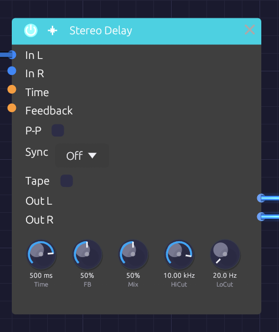

Stereo Delay
Module ID fx.delay · Category Effect

Ping-pong, Sync and Tape switch the character; the knobs set the echoesThe Stereo Delay plays back a copy of its input a moment later, then feeds that copy back in to make repeats. Filters in the feedback path darken or thin each repeat, P-P bounces the repeats between left and right, and Sync locks the time to the patch tempo.
Switch on Tape and it becomes a worn tape echo: the repeats waver in pitch, saturate as they build, and get darker each time around. Push the feedback far enough and they run away into the classic dub swell.
How it works
- Each channel is written into its own delay line.
- A read head plays the line back Time later. Reads usually fall between two samples, and a cubic (Catmull-Rom) interpolator fills the gap, so time changes and modulation glide smoothly instead of clicking or dulling the highs.
- The playback runs through HiCut and LoCut, is scaled by FB, and goes back into the line with the input. Each repeat passes through the filters once more than the one before it.
- Mix blends the dry input with the playback.
Inputs
| Port | Signal Type | Description |
|---|---|---|
| In L | Audio (Blue) | Left input |
| In R | Audio (Blue) | Right input. When unpatched, it copies In L |
| Time CV | Control (Orange) | Stretches or shrinks the delay time around the knob: ±1 swings it by ±50% |
| Feedback CV | Control (Orange) | Adds to the feedback around the knob: ±1 adds ±50% |
Outputs
| Port | Signal Type | Description |
|---|---|---|
| Out L | Audio (Blue) | Left echoes, mixed with the dry signal |
| Out R | Audio (Blue) | Right echoes, mixed with the dry signal |
Parameters
| Control | Range | Default | Description |
|---|---|---|---|
| Time | 1 ms – 2000 ms | 500 ms | Time between echoes. Ignored while Sync is on |
| FB (Feedback) | 0 – 100% | 50% | How much of each repeat comes back |
| Mix | 0 – 100% | 50% | Dry (0%) to echoes only (100%) |
| HiCut | 100 Hz – 20 kHz | 10 kHz | Lowpass in the feedback path: darkens each repeat |
| LoCut | 20 Hz – 2 kHz | 20 Hz | Highpass in the feedback path: thins each repeat |
| P-P (Ping-Pong) | On / Off | Off | Each repeat crosses to the other channel |
| Sync | Off, 1/4, 1/8, 1/8T, 1/16, 1/16T, 1/32, 1/4D, 1/8D | Off | Locks the time to a note length at the patch tempo |
| Tape | On / Off | Off | Tape echo character (see Tape mode) |
Time and FB keep working while their CV inputs are patched: the knob sets the center and the CV moves around it.
Feedback
In normal mode, feedback stops at 95%, and a soft clipper in the loop keeps the echoes from growing out of control. Around 30% gives a few echoes that fade naturally; 60% gives long trails; the top of the knob repeats almost forever.
In Tape mode the knob reaches further. See Runaway.
Tempo sync
Set Sync to a note length and the delay time follows the patch tempo. A Clock anywhere in the patch sets that tempo, so turning the Clock's BPM knob moves the echoes with it; they glide to the new time with a brief bend in pitch. With no Clock in the patch, the delay assumes 120 BPM. If a patch has more than one Clock, only one of them sets the tempo, so keep one Clock as the master.
| Division | Beats | At 120 BPM |
|---|---|---|
| 1/4D | 1½ | 750 ms |
| 1/4 | 1 | 500 ms |
| 1/8D | ¾ | 375 ms |
| 1/8 | ½ | 250 ms |
| 1/8T | ⅓ | 167 ms |
| 1/16 | ¼ | 125 ms |
| 1/16T | ⅙ | 83 ms |
| 1/32 | ⅛ | 62.5 ms |
Synced times are capped at 2 seconds. Time CV still works while synced, swinging the synced time.
Tape mode
Tape models a tape echo: a loop of tape passing a record head and a play head. Switching it crossfades in about 15 ms, so you can flip it while echoes are still sounding.
Wow and flutter. The play head wanders. A slow wow (about 0.5 Hz, plus a slower drift of the reel) and a fast flutter (6 to 10 Hz) bend the pitch of the repeats by a few cents. The four motions run at unrelated rates, so the pattern doesn't loop.
Record-head saturation. The input and the feedback are recorded together through a soft, slightly lopsided curve. Quiet signals pass unchanged; loud ones round off and pick up the even harmonics of magnetized tape. Because the saturation sits inside the loop, a busy echo squashes and thickens as it builds.
Tape loss. Tape loses top end every time it records, so each repeat is darker than the last. Longer delays mean slower tape and darker repeats: the loss starts around 7 kHz at 250 ms and falls to about 3.5 kHz at one second. HiCut still works on top of it.
Motor glide. Time changes glide over about a quarter of a second, like a motor finding its new speed, and the repeats swoop in pitch as they go.
Runaway
In Tape mode, FB above about 90% pushes the loop past unity gain. The echoes grow until the record head's saturation holds them: the dub runaway. The output stays bounded at any setting, so you can ride it. Pull FB back below 90% and the echoes die away again.
Bypass
Click the power switch in the node header, press Ctrl+B with the module selected, or choose Bypass from its right-click menu. In L passes straight to Out L and In R to Out R (In R still copies In L when unpatched). The switch crossfades over 20 ms. A bypassed delay stops running, and it starts from silence when you switch it back in, so old echoes don't come back with it.
Patch ideas
Slapback. Time 80–120 ms, FB 0%, Mix 30%, Tape on. A single, slightly smeared echo, like a 1950s vocal.
Dotted-eighth rhythm. Sync 1/8D, FB 40%, Mix 40%. Turn on P-P with a stereo source and the repeats fall between the beats, alternating sides.
Dub throw. Sync 1/4 or 1/8D, FB 60%, LoCut 150 Hz, Tape on. For a bar, push FB up to the top and let it run away, then pull it back.
Chorus from a delay. A short time with the read head moving bends the copy's pitch:
[LFO Out] ──> [Delay Time CV] Time 15–30 ms, FB 0–20%, Mix 50%
Ducking feedback. An inverted envelope pulls the feedback down on every hit, so the echoes swell back between them:
[Clock Gate] ──> [ADSR Gate]
[ADSR Out] ──> [Attenuverter In] (negative Amount)
[Attenuverter Out] ──> [Delay Feedback CV]